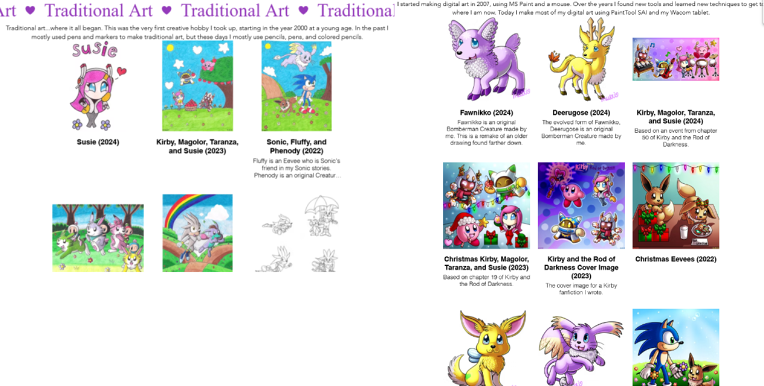
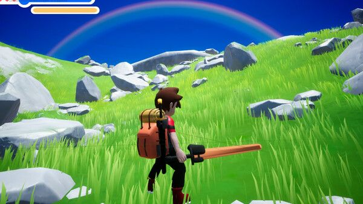

Below are the following sites I wish to gain more recognition and popularity. You can learn short discriptions about the websites from the webmasters themselves as well. (Notes below provided by me are from yours truly).
If you are interested in sharing your website, online page, or whatever other digital domain, then contact me at petertomlan@voyageacrossmanyworlds.com. If it's something I would want to garner more attention, doesn't stray too far from my website's content, doesn't feel out of place with my site's age focused, and would like myself (or at least comprehend what the creator wants to accomplish with it), then I'll have no problem posting your affiliate onto my website.

"Multi's Creative Corner is packed with cute, fun, and family-friendly creative content! You can find some delightful drawings, music, craft projects, and more here!"

(Peter notes: A solo studio currently developing a game called Twilight Explorers.) Step into the world of Adva, a planet shattered into countless pieces by a cataclysmic event. In "Twilight Explorers," you are a young Explorer from Orangewood, competing in a grand tournament for a place in the prestigious Academy to train as a Guardian—a Celestial protector of realms and a master of Kairos. Use ancient Celtic-Atlantean teleportation gates to explore 1 billion procedurally generated shattered world zones by combining hidden keywords. If you find a world you like, or discover a rare secret, tell your friends about it by giving them the keyword combination in the form of a GRID:// URL.
.png)

(Peter notes: My sisters' online store.) Le Ange Rosé Shoppe is an Etsy shop that features girly, kawaii anime art on stationery and other fun home and lifestyle products. Inspired by shoujo-style art, girls of all ages would enjoy these products, particularly from preteens to 30s.